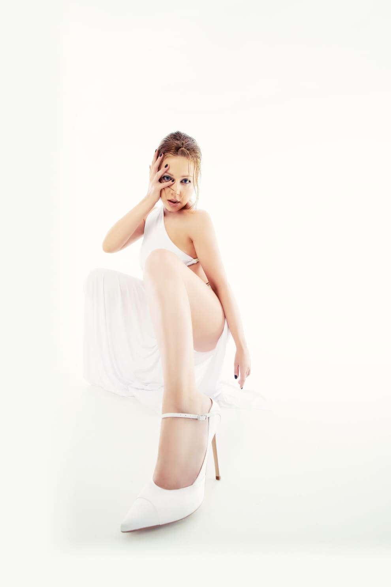

«Песня Красиво особенная, и клип на нее мог быть только
таким — это Live performance, живое исполнение
с моим бендом. Я соскучилась по концертам, по тому,
как песня оживает в моменте. Это не просто студийная
запись, Live performance — это звук моего сердца»
«Песня Красиво особенная,
и клип на нее мог быть
только таким
— это Live performance,
живое исполнение
с моим бендом.
Я соскучилась
по концертам, по тому,
как песня оживает
в моменте. Это не просто
студийная запись,
Live performance
— это звук моего сердца»
«Красиво» – альбом в первую очередь танцевальный и электронный. Большинство песен созданы с помощью синтезаторов и семплов: легко представить, как летом завсегдатаи вечеринок будут танцевать под «Хороший парень» — игривый, остроумный трек о девушках, которые влюбляются в плохих парней, или под «Это любовь» — легкий танцевальный хит в духе 1990-х. Но не все так просто: за первым планом, классической танцевальной поп-музыкой, скрывается второй – вокал. Манера Тины напоминает исполнение лучших представительниц поп-жанра начала 2000-х, голос которых всегда был шире любых границ, – Кристины Агилеры, Мэрайи Кэри, Бейонсе. Это тоже о трансформациях, которых в "Красиво" так много.
«Я сама для себя поэт: что чувствую, то и пишу. Лучшая из поэм, где я без тебя дышу», — поет Тина. Тут так много скрыто между строк: и отказ от прошлой жизни, и признание в собственном феминизме, если хотите. «Это переломная песня. Она о переходе меланхоличной, лиричной Тины к смелой, самодостаточной девушке», – так описывает трек сама певица. Важная ремарка: от первой до последней строчки это авторский альбом Тины (написанный в соавторстве с композитором Аркадием Александровым), главный источник вдохновения – личные истории из ее жизни.
«Оказалось, что в отсутствие суеты я могу быть гораздо продуктивнее, музыкальнее, талантливее, – продолжает Тина. – Поэтому этот альбом – новое амплуа, в каком-то смысле мой ребрендинг. Дерзкая танцевальная музыка для меня вызов, потому что зрители все-таки привыкли к Тине лирической, романтической. Записать такой альбом – значит рискнуть, финансово в том числе: кому-то может не понравиться новая Тина. Я пошла ва-банк, но не боюсь, потому что ощущаю полноту своих сил, гармонию. Я расцвела и наконец понимаю, чего хочу. Сейчас мы представляем альбом "Красиво", но уже готов следующий, он тоже выйдет в этом году – у меня много энергии».